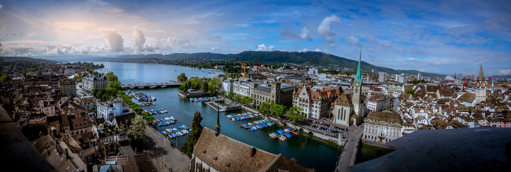

Dimanche, le 12 novembre, 2023
Ah oui, la Suisse. Elle est souvent connue comme le pays des montagnes, des fromages et des chocolats. Mais si je vous disais que ce n’est pas tout ce qu’il y a dans ce petit pays alpin? Eh bien, aujourd’hui, nous allons découvrir ce pays qui est célèbre dans le monde entier pour son génie horloger, son ingéniosité du design et de l'architecture et ses écoles polytechniques fédérales prestigieuses!
Les horloges sont la fierté et la joie des Suisses! Des marques telles que Rolex, Patek Philippe et Omega sont les marques de montres suisses les plus connues au niveau international. Leurs conceptions complexes et leur souci du détail les rendent uniques d'autres marques. Chaque marque représente des décennies et des siècles de tradition. Rolex, célèbre pour sa robustesse et son prestige, Patek Philippe pour son savoir-faire artistique et ses complications remarquables, et Omega pour sa technologie révolutionnaire et son association avec l'exploration spatiale. Ces marques établissent certes un standard de qualité inégalé dans l'industrie horlogère.

Lorsque l'on parle du génie de la Suisse en matière de design, on ne peut pas oublier le couteau suisse! Inventé par Karl Elsener en 1891, cet outil combine des lames, des tournevis et des ciseaux en un mécanisme de poche portable. Elsener a révolutionné les outils portables avec sa création. Il offre une variété de fonctionnalités compactes telles que des lames, des ouvre-boîtes, des tournevis, même des cure-dents et des pinces! Il est utile et accessible non seulement pour les aventuriers et les professionnels, mais même pour le quotidien.
La Suisse est fière de ses valeurs historiques et traditionnelles, et ses bâtiments en sont le reflet. Des villes comme Zurich se distinguent par leurs espaces verts et leurs transports publics efficaces. Par rapport au canada, ou on met l’accent sur l’expansion constante des espaces urbains, la Suisse se concentre sur la création des villes compactes et bien organisées. En Suisse, cette focalisation sur des villes compactes et organisées s'étend au-delà de l'aménagement urbain. Elle se traduit aussi de la préservation de l'environnement et des espaces naturels.
Grâce aux des Écoles polytechniques fédérales, la Suisse est devenue une figure importante dans le domaine de l'ingénierie et de la technologie, en particulier dans les secteurs de la pharmacie et de la finance. Quelques-uns des institutions les plus connues incluent l'ETH Zurich et l'EPFL Lausanne. Ils ont réalisé de nombreuses avancées dans des domaines tels que la robotique, la science des matériaux et les technologies de l'information. La Suisse a attiré des étudiants et des chercheurs du monde entier. Leurs programmes diversifiés et leurs liens étroits avec le secteur privé ont stimulé leur développement économique et renforçé la position de la Suisse en tant que dirigeant mondial dans le domaine de la technologie et de l'ingénierie.
C'est tout pour aujourd'hui !
J'espère que vous avez trouvé cela intéressant! N'oubliez pas de consulter notre autre blog sur la cuisine suisse et notre podcast sur la musique suisse !